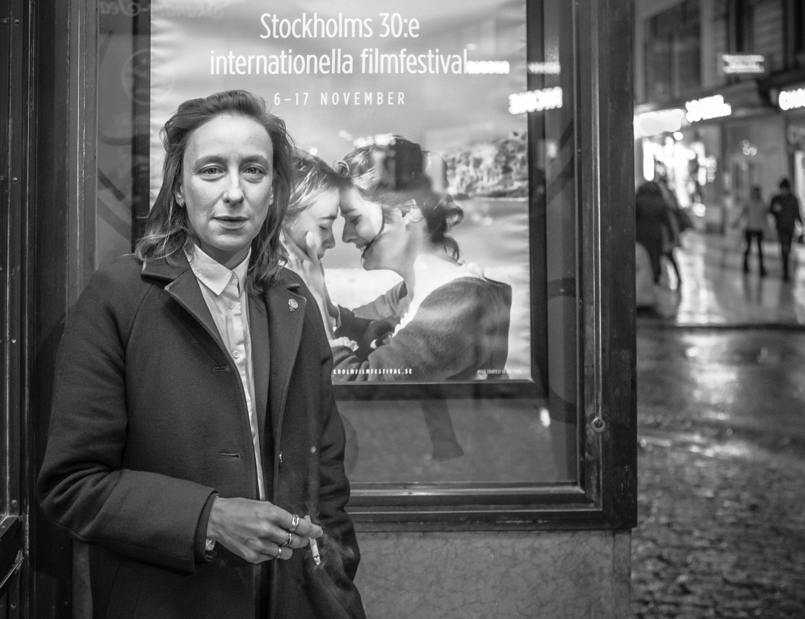

Céline Sciamma
Female from female gaze.

“My movie is always about a few days out of the world, where we can meet each lover, love each other. Also it’s always about female characters because they can be themselves only in a private place where they can share their loneliness, their dreams, their attitudes, their ideas.”
Here's a time line of Sciamma's life:
ENGLISH / CHINESE
- 1978 - 出生于巴黎郊外的塞尔吉蓬图瓦兹。养育她的祖母是好莱坞经典老片的粉丝。
- 1990s - 十几岁时，每周 3 次参与 Cergy 的艺术影像组织 Utopia。
- 2000 - 在巴黎南泰尔大学获得法国文学硕士学位，然后在一家互联网初创公司的 营销 部门开始了她的第一份工作。
- 2002 - 就读于首屈一指的法国电影学校 La Fémis，编写了她的第一个原创剧本 《水仙花开》，并迅速开始了站在摄影机后的生涯，拍摄了这个剧本作为毕业项目。这是她第一次发号施令，第一次当领导。
- 2007 - 她的处女作 《水仙花开》，充满了青春期的迷茫和渴望，试图让每一位观众都以少女的眼光看待这个世界。它在 2007 年戛纳电影节上被选入“一种关注”进行放映。但它带来的新的冲击使一些批评者措手不及。
- 2008 - 《水仙花开》 获得了 2008 年凯撒奖的三项提名：她被提名为最佳处女作导演，女演员阿黛拉·哈内尔和路易丝·布拉谢尔都获得了最具潜力女演员提名。
- 2009 - 导演了她的第一部短片《宝琳》，作为政府反恐同症运动的一部分，该运动常被称为“反对恐同症的五部电影”。
- 2011 - 她的新电影 《假小子》 在几个月内完成。她在三周内写好剧本，在三周内完成选角，并在 20 天内完成了电影的拍摄，在第 61 届柏林国际电影节的全景单元首映。这部电影也作为教育的一部分在法国学校放映。
- 2014 - 她的电影 《女孩帮》 选为 2014 年戛纳电影节导演双周单元的一部分，并在 2014 年多伦多国际电影节和 2015 年圣丹斯电影节上放映。在采访中，她说《女孩帮》是三部曲（《水仙花开》、《假小子》）的最后一部成年期电影。
- 2015 - 开始担任SRF（电影导演协会）的联席主席。
- 2016 - 为青年时代仰慕的安德烈·泰希内 (André Téchiné) 新作《成为 17》担任共同编剧。
- 2019 - 她的第四部剧情长片 《燃烧女子的肖像》在 2019 年戛纳电影节的竞赛单元中首映，并获得了酷儿金棕榈奖和最佳剧本奖。她将其视作 女性凝视的宣言。
- 2020 - 她是 5050 by 2020 运动法国分支的创始成员之一，该组织由一群法国电影业专业人士组成，倡导电影中的性别平等。
- 2021 - 她的第五部长片 《小妈妈》 3 月在柏林电影节上首映，其后在圣塞巴斯蒂安国际电影节上放映，并获得了观众选择奖。同年，她与 Jacques Audiard 和 Léa Mysius共同创作了电影 《奥林匹亚街区》 。
“在九个月的时间里，我们整个生活都是企业的。这就像一架飞行模拟器。我们起飞了，我们飞啊飞。啊，坠毁了。之后我就去了电影学校。”
“是啊，领导，听起来很傲慢又父权。但电影的确有很强的等级制度。作为导演，你必须回答所有问题。如果有角色要点燃一支烟，他们会给你看10盒火柴，你挑一根用。基本上这就是工作。你想在墙上装什么样的电灯开关？你想在墙上涂上什么颜色的油漆？所以，是的，你是领导。但你正在做的是回答每天 50 或 60 或 100 个问题。”
“在初次糟糕的性爱体验后，男孩回来试图亲吻她，她一口吐在他嘴里。在 2007 年，每个观众都呕了一声，他们对她的所作所为感到厌恶。现在不同了。就在疫情之前，阿黛尔在一所高中放映了这部电影，之后她打电话给我，说观众的反应发生了变化。每个人都在欢呼和鼓掌，认为她做了正确的事。”
“男性凝视孜孜不倦地代表我们女同性恋，因为这是一种控制方式。事实上，我们自己的故事很强大，因为它们很危险，我们是危险的女人。所以他们用这个便利的策略来鄙薄我们，破坏我们————因为它减少了我们对政治动态的强大影响力”
If you have time, you should read more about this incredible woman on her Wikipedia entry and Guardian Interview.